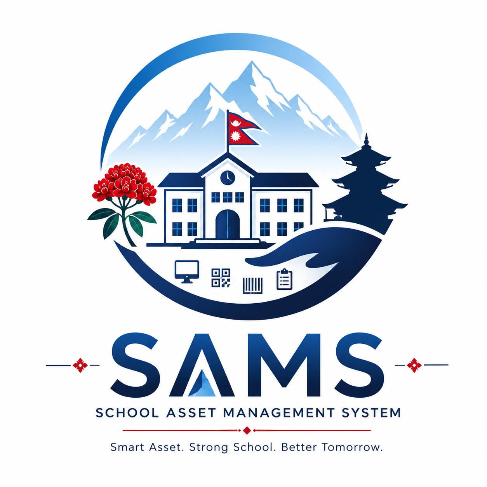

Version 1.0.0
Centralized asset tracking, maintenance, transfer, reporting, and administration for schools, scoped by role across province, municipality, and school.
This document describes the system as implemented in the repository. For endpoint payloads see
docs/API-CONTRACT.md. For table columns see docs/ER-DIAGRAM.md.
SAMS Nepal (School Asset Management System) is a separated web application: a Vue 3 single-page frontend, a Node.js / Express REST API, and PostgreSQL. Users authenticate with JWT. Data access is enforced by role and geographic scope, not by hiding menus alone.
| Item | Value |
|---|---|
| Application name | SAMS Nepal |
| Full name | School Asset Management System |
| Version | 1.0.0 |
| Tagline | Asset Tracking, Maintenance & Transfer Management |
| Logo / favicon | frontend/public/assets/logo.png (served as /assets/logo.png) |
| Browser title | {page} — SAMS Nepal |
| API base | /api/v1 |
| OpenAPI UI | /api/docs |
Browser (Vue SPA)
→ HTTP(S) → Express API (/api/v1)
→ PostgreSQL
Typical local development: frontend http://localhost:5173,
API http://localhost:5001 (when PORT=5001),
PostgreSQL often published on host port 5433 when using a container.
Production hosts replace every localhost value. See docs/Deployment-Guide.md.
SAMS Nepal was designed after a reference industrial-lab inventory app (monolithic HTML, duplicated asset tables, client-side users). That reference is not part of this repository. The current product keeps useful UX patterns (sidebar shell, KPI cards, filtered tables) and replaces the architecture.
| Area | Reference problem | SAMS Nepal (implemented) |
|---|---|---|
| Frontend | Single HTML file, no framework | Vue 3 + Vite, pages and components |
| Auth | Hardcoded client users | JWT + bcrypt + server RBAC + logout token revocation |
| Database | Duplicate asset tables, weak relations | Normalized schema, UUID keys, FKs, soft-delete assets |
| Domain | Lab equipment silos | Province → Municipality → School → Asset |
| Tenancy | None | Role-scoped queries in repositories |
| API | Fat route files | Routes → controllers → services → repositories |
| Styling | Large inline CSS | Tailwind CSS 4 with navy design tokens |
| Reports | Limited | Six report types, ExcelJS + PDFKit |
Asset-Management/ ├── frontend/ Vue 3 SPA │ ├── public/assets/logo.png │ ├── src/ │ │ ├── api/ Axios wrappers │ │ ├── components/ layout, ui, dashboard, assets, … │ │ ├── constants/app.js Branding (name, version, logo) │ │ ├── layouts/ AuthLayout, MainLayout │ │ ├── pages/ Route-level views │ │ ├── router/ │ │ ├── stores/ Pinia (auth, app) │ │ └── utils/ │ ├── index.html │ └── package.json ├── backend/ │ ├── src/ │ │ ├── config/ │ │ ├── constants/ Roles and permissions │ │ ├── controllers/ │ │ ├── middleware/ auth, authorize, validate, errors │ │ ├── repositories/ │ │ ├── routes/ │ │ ├── services/ │ │ ├── validators/ │ │ ├── utils/ jwt, pdf/excel export, scope │ │ ├── docs/ OpenAPI │ │ └── app.js │ ├── server.js │ └── Dockerfile ├── database/ │ ├── migrations/ 001–017 │ ├── seeds/ 001–008 │ ├── schema.sql │ ├── run_migrations.sql │ └── run_seeds.sql ├── docs/ └── README.md
There is no root docker-compose.yml. Local PostgreSQL is typically a container
(sams_postgres on port 5433). The API may be started with npm run dev
from backend/. A backend/Dockerfile exists for the API image.
Geographic hierarchy: Province → Municipality → School → Asset.
| Table | Purpose |
|---|---|
| provinces | Top-level geography |
| roles | Role slug, name, JSONB permissions |
| municipalities | Local units (province_id, code, district, is_active) |
| schools | Schools (municipality_id, school_code, school_type, is_active) |
| users | Accounts (role, province, municipality, school, email, password_hash) |
| asset_categories | Classification (name, department, is_active) |
| asset_statuses | Lifecycle states (slug, color_code, sort_order) |
| asset_tag_sequences | Per municipality + year sequence for tags |
| assets | Inventory; soft deactivate via deleted_at |
| asset_history | Append-only lifecycle events |
| maintenance_requests | Maintenance workflow |
| asset_transfers | Inter-school transfer workflow |
Auto-generated: SAMS-{MUN_CODE}-{YEAR}-{SEQ}
(example SAMS-BTW-2026-0001). Sequence is per municipality per calendar year.
Column assets.qr_code. Default pattern:
https://sams.gov.np/verify/{asset_tag}.
Public verify endpoint: GET /api/v1/assets/verify/:tag.
Assets use deleted_at (deactivate, not physical delete). Related history and completed
workflow rows are retained. Operational inventory, reports, and assignment dropdowns use active
records. Inactive assignment targets stay visible on edit when already assigned.
| Entity | Count | Notes |
|---|---|---|
| Provinces | 1 | Lumbini Province (LUM) |
| Municipalities | 3 | Butwal (BTW), Siddharthanagar (SDH), Lumbini Sanskritik (LSM) |
| Schools | 27 | 10 + 7 + 10 |
| Asset categories | 27 | Seven departments (see below) |
| Asset statuses | 5 | Active, Damaged, Under Maintenance, Disposed, Lost |
| Demo users | 3 | One per role (development only) |
| Demo assets | 500 | Seed inventory |
docs/Production-Checklist.md).
Butwal Sub-Metropolitan City — Kalika Manavgyan Secondary School, Kanti Secondary School, Naharpur Secondary School, Nayagaun Secondary School, Nawa Ratna Secondary School, Nabin Audhyogic Kadar Bahadur Rita Secondary School, Jitgadi Basic School, Amar Secondary School, Sitaram Basic School, Ujyaalo Basic School.
Siddharthanagar Municipality — Bhairahawa Model Secondary School, Rupandehi Secondary School, Paklihawa Secondary School, Siddhartha Secondary School, Gautam Buddha Secondary School, Kanya Secondary School, Narainapur Basic School.
Lumbini Sanskritik Municipality — Tenuhawa Community Secondary School, Khudabagar Secondary School, Shree Masina Baba Narendra Puri Moglaha Secondary School, Balrampur Secondary School, Karmahawa Secondary School, Aama Secondary School, Nepal Rastriya Basic School, Bhagwanpur Secondary School, Sonbarsha Basic School, Mahilwar Secondary School.
| Department | Categories |
|---|---|
| Classroom Assets | Benches, Desks, Chairs, Whiteboards, Smart Boards, Projectors |
| Computer Lab Assets | Desktop Computers, Laptops, Printers, UPS, Routers |
| Library Assets | Books, Bookshelves, Library Computers |
| Science Lab Assets | Microscopes, Lab Equipment |
| Sports Assets | Footballs, Cricket Kits, Volleyball Equipment |
| Office Assets | Office Computers, Office Printers, Tables, Office Chairs |
| Infrastructure Assets | CCTV Cameras, Water Coolers, Solar Panels, Generators |
Department on categories and assets is an operational classification field (for example Classroom Assets). It is not a government ministry name.
Development (typical): http://localhost:5001/api/v1 Default listen port: 5000 (override with PORT) Production: https://<api-host>/api/v1
Public (unauthenticated): POST /auth/login, GET /health,
GET /api/v1/health, GET /assets/verify/:tag.
auth, health, dashboard, provinces,
municipalities, schools, assets,
maintenance, transfers, reports,
categories, statuses, users.
| Method | Endpoint | Access |
|---|---|---|
| POST | /auth/login | Public |
| POST | /auth/logout | Authenticated (revokes token) |
| GET | /auth/me | Authenticated |
| GET | /dashboard, /dashboard/kpis, /dashboard/charts/* | dashboard:read, scoped |
| GET | /provinces, /provinces/:id | municipalities:read |
| GET/POST/PUT | /municipalities | State Admin and Municipal Officer; write needs municipalities:write |
| GET/POST/PUT | /schools | schools:read / schools:write, scoped |
| GET | /schools/:id/assets | assets:read |
| GET/POST/PUT/DELETE | /assets | Scoped; DELETE is deactivate (state_admin or school_admin + assets:write) |
| GET | /assets/:id/history | history:read |
| GET | /assets/:id/qr | assets:read |
| GET/POST | /maintenance | read / request |
| PUT | /maintenance/:id/approve|reject|complete | maintenance:approve |
| GET/POST | /transfers | read / request |
| PUT | /transfers/:id/approve|reject|complete | transfers:approve |
| PUT | /transfers/:id/cancel | transfers:request |
| GET | /reports/{inventory|municipality|school|maintenance|transfers|summary} | reports:read |
| GET | /reports/:reportType/export?format=xlsx|pdf | reports:read |
| GET/POST/PUT | /categories | read all authenticated with categories:read; write State Admin |
| GET | /statuses | Authenticated |
| GET/POST/PUT/DELETE | /users | users:read / users:write |
// Success
{ "success": true, "data": { ... }, "meta": { "page": 1, "limit": 20, "total": 142, "totalPages": 8 } }
// Error
{ "success": false, "error": { "code": "FORBIDDEN", "message": "..." } }
Out-of-scope identifiers return 404 or 403, not another tenant’s payload.
Request → auth.middleware (JWT + revocation store) → authorize / requireRoles → validate (express-validator) → controller → service (workflow + scope) → repository (parameterized SQL) → PostgreSQL
{
"sub": "user-uuid",
"email": "state.admin@sams.gov.np",
"role": "state_admin",
"permissions": ["assets:read", "assets:write", "..."],
"provinceId": "...",
"municipalityId": null,
"schoolId": null,
"jti": "token-uuid",
"iat": 1700000000,
"exp": 1700086400
}
/login LoginPage [guest only] / MainLayout [authenticated] /dashboard DashboardPage /profile ProfilePage /about AboutPage (linked from Profile, not sidebar) /assets AssetListPage /assets/create AssetCreatePage [assets:write] /assets/:id AssetDetailPage /assets/:id/edit AssetEditPage [assets:write] /maintenance MaintenanceListPage /maintenance/create MaintenanceCreatePage [maintenance:request] /maintenance/:id MaintenanceDetailPage /transfers TransferListPage /transfers/create TransferCreatePage [transfers:request] /transfers/:id TransferDetailPage /reports ReportsPage [reports:read] /reports/inventory InventoryReportPage /reports/municipality MunicipalityReportPage /reports/school SchoolReportPage /reports/maintenance MaintenanceReportPage /reports/transfers TransferReportPage /reports/summary SummaryReportPage /users UserListPage [users:read] /users/create UserCreatePage [users:write] /users/:id UserDetailPage /users/:id/edit UserEditPage /municipalities MunicipalityListPage [state_admin, municipal_officer] /municipalities/create MunicipalityCreatePage [municipalities:write] /municipalities/:id/edit MunicipalityEditPage /schools SchoolListPage [schools:read] /schools/create SchoolCreatePage [schools:write] /schools/:id SchoolDetailPage /schools/:id/edit SchoolEditPage /categories CategoryListPage [categories:read] /categories/create CategoryCreatePage [categories:write] /categories/:id/edit CategoryEditPage /:pathMatch(.*)* → dashboard
Guards: unauthenticated users go to login; guests cannot open the app shell; missing permission or role redirects to the dashboard with a notice.
| Nav item | State Admin | Municipal Officer | School Admin |
|---|---|---|---|
| Dashboard | ✓ | ✓ | ✓ |
| Assets | ✓ all | ✓ municipality | ✓ own school |
| Maintenance | ✓ | ✓ | ✓ |
| Transfers | ✓ | ✓ | ✓ |
| Reports | ✓ | ✓ | ✓ |
| Users | ✓ | — | — |
| Municipalities | ✓ | ✓ | — |
| Schools | ✓ | ✓ | ✓ (read) |
| Categories | ✓ | ✓ read | ✓ read |
Chrome: navy sidebar (256px), sticky header, authenticated footer with name and version. Mobile: sidebar drawer; header shows the logo only below the lg breakpoint so it is not duplicated next to the desktop sidebar.
| Role slug | Scope | Typical capabilities |
|---|---|---|
| state_admin | All records | Full administration: users, municipalities, schools, categories, assets, workflows, reports |
| municipal_officer | Assigned municipality | Read assets and schools; approve/reject/complete maintenance and transfers; reports. Cannot create assets or manage users |
| school_admin | Assigned school | Create/edit/deactivate own-school assets; request maintenance and transfers; cannot approve those workflows |
municipalities:read, municipalities:write schools:read, schools:write assets:read, assets:write, assets:delete categories:read, categories:write users:read, users:write reports:read, dashboard:read, history:read transfers:read, transfers:request, transfers:approve maintenance:read, maintenance:request, maintenance:approve
| Role | Scope |
|---|---|
| state_admin | No geographic filter |
| municipal_officer | Records in user.municipalityId |
| school_admin | Records in user.schoolId |
| Workflow | Happy path | Other actions |
|---|---|---|
| Maintenance | request → approve → complete | reject |
| Transfer | request → approve → complete (asset school updates) | reject; cancel while pending (requester) |
| Role | |
|---|---|
| State Administrator | state.admin@sams.gov.np |
| Municipal Officer (Butwal) | municipal.butwal@sams.gov.np |
| School Administrator (Kalika Manavgyan) | school.kmg@sams.gov.np |
Implemented look: professional navy-and-slate administrative UI. No Google Fonts, no icon package,
no Chart.js. Charts are custom Vue components (DashboardBarList, DashboardDonutChart).
frontend/src/style.css)| Token | Value | Usage |
|---|---|---|
| navy-950 | #0B1F3A | Sidebar, headings, brand |
| navy-900 | #122A4A | Sidebar depth |
| navy-800 | #1A3A63 | Accents |
| navy-700 | #23487A | Focus ring, hover |
| crimson-700 | #9B1C2E | Destructive emphasis |
| Page background | #F1F5F9 (slate-100) | App canvas |
| Active status | #16A34A | Status badge |
| Under Maintenance | #D97706 | Status badge |
| Damaged | #DC2626 | Status badge |
| Element | Implemented size |
|---|---|
| Sidebar | 256px (Tailwind w-64), mobile off-canvas |
| Header | min-height 56px |
| Login logo | 96px, single image above the form |
| Sidebar logo | 40px |
| Mobile header logo | 32px (lg:hidden) |
| Font | Segoe UI, Noto Sans, Helvetica Neue, Arial |
| Login layout | Split panel on large screens: product copy left, form right |
Hosting is platform-agnostic. Production is a static frontend, a Node API process, and PostgreSQL with TLS on public endpoints. The earlier plan named Cloudflare Pages, Render, and Neon as one possible combination; those names are not required.
| Component | How it runs |
|---|---|
| Frontend | npm run build → serve frontend/dist with SPA fallback |
| Backend | npm start (Node 20+), reverse proxy for HTTPS |
| Database | PostgreSQL 14+; apply database/run_migrations.sql |
| Variable | Where | Local example | Production |
|---|---|---|---|
| VITE_API_URL | Frontend (build time) | http://localhost:5001/api/v1 | https://<api-host>/api/v1 |
| NODE_ENV | Backend | development | production |
| PORT | Backend | 5000 or 5001 | Platform port |
| APP_VERSION | Backend | 1.0.0 | Release version |
| DATABASE_URL | Backend | localhost / Docker 5433 | Managed DB + SSL |
| JWT_SECRET | Backend | dev placeholder | Long unique secret |
| JWT_EXPIRES_IN | Backend | 24h | Policy TTL |
| CORS_ORIGIN | Backend | http://localhost:5173 | Exact frontend origin |
Templates: frontend/.env.example, backend/.env.example. Checklist: docs/Production-Checklist.md.
| Former decision | Implemented choice |
|---|---|
| Sidebar style | Navy (#0B1F3A), not a light reference sidebar |
| Asset tags | Auto-generated SAMS-{MUN}-{YEAR}-{SEQ} |
| Maintenance / transfers | Full tables and UI workflows in v1.0.0 |
| Demo users | Three bcrypt-seeded accounts (development) |
| Charts | Custom Vue charts (no Chart.js / ApexCharts package) |
| Layout | frontend/, backend/, database/ at repo root |
| Reports | XLSX and PDF (not CSV-only) |
| Branding | SAMS Nepal product name; shared logo file; no second login logo |
| Original phase | Status in v1.0.0 |
|---|---|
| 1 Foundation (scaffold, schema, auth, shell) | Done |
| 2 Core (dashboard, assets, schools) | Done, plus maintenance and transfers |
| 3 Admin (users, categories, reports) | Done, including municipality admin and dual export |
| 4 Polish (errors, loading, responsive, deploy docs) | Done at documentation and UI-polish level; production hosting is operator-owned |
frontend/src/pages/ComingSoon.vue exists but is not routed.| Layer | Technology (as shipped) |
|---|---|
| Frontend | Vue 3.5, Vite 8, Vue Router, Pinia, Axios, Tailwind CSS 4 |
| Charts / icons | Custom Vue components; no Chart.js or Heroicons package |
| Backend | Node.js 20+, Express 4 |
| Validation / security | express-validator, helmet, cors, bcryptjs, jsonwebtoken |
| Exports | ExcelJS, PDFKit |
| API docs | swagger-ui-express |
| Database | PostgreSQL, UUID primary keys, pg pool |
| Auth | JWT (24h default) + bcrypt + in-memory/store revocation on logout |
| Frontend deploy | Static dist/ + SPA fallback (any host) |
| Backend deploy | Node process + reverse proxy TLS (any host) |
| Document | Use |
|---|---|
| README.md | Project entry and local run |
| docs/User-Guide.md | How to use the application |
| docs/Deployment-Guide.md | Build and run for production |
| docs/Production-Checklist.md | Release checklist |
| docs/Technical-Documentation.md | Architecture notes |
| docs/API-CONTRACT.md | REST request/response contract |
| docs/ER-DIAGRAM.md | Data model |
| docs/SAMS-Nepal-Architecture-Plan.html / .pdf | This as-built architecture plan |
SAMS Nepal — School Asset Management System · Architecture Plan v2.0 (as-built) · 19 August 2026 · Application v1.0.0